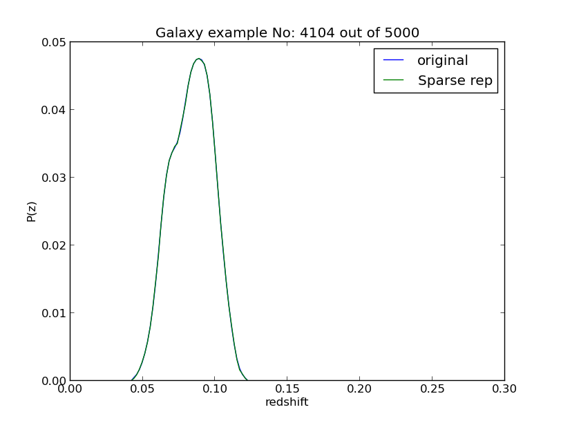
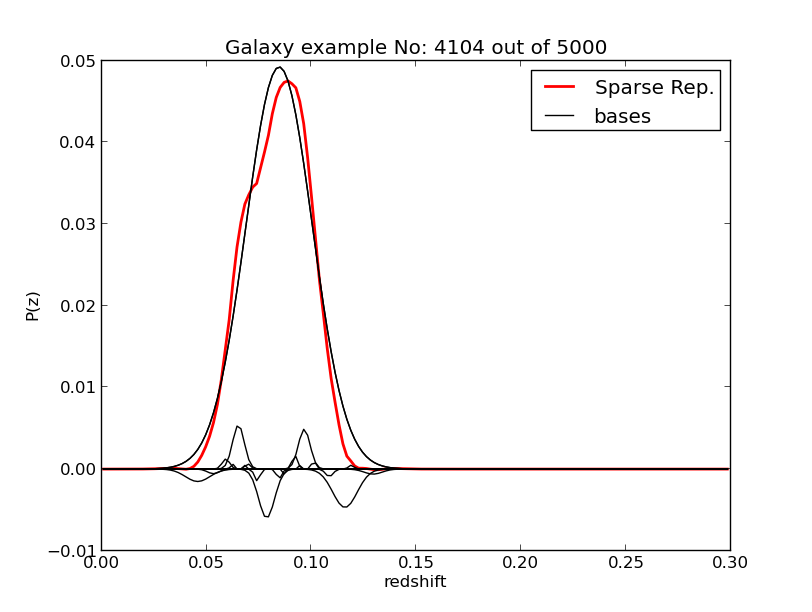

Sparse Representation (new!)¶
Sparse Representation of photometric redshift PDFs [1] is a novel technique to represent and store these PDFs in an efficient way without losing resolution or information. It works by creating a over determined dictionary of basis with Gaussian and Voigt profiles which cover the redshift space for several values for the center and width for these distributions. Usually we create less than 2^16 bases so we can represent them using 16 bits integers. By using an Orthogonal Matching Pursuit algorithm we look to minimize the number of bases used, without repetition, and the coefficients for each base can be also represented using another 16 bits integer. In this way, we can represent a PDF using only 32-bits integers per base when only 10-20 bases is necessary.
{kind=link}
A single four-byte integer scheme to store a single basis function in the sparse representation method. The first sixteen bits store the coefficients (including sign), while the second sixteen bits store the location of the bases in the dictionary.
{kind=link}
A illustration of the bases used in the dictionary, each shaded region is composed by several functions of different widths, those colored shaded regions are full of bases. In a real dictionary the spacing between these functions is much tighter (~200 points in the redshift range)
Github Repo¶
This implementation is an stand-alone program and here is the Github repo for more info (Link)
Example Case¶
 Based on our previous example on the SDSS data. we have added additional keys on the ref:input-file, including a key for computing the sparse representation. If this key is set to yes then MLZ will run longer but it will produce a fits file with the extension .Psparse.fits which have all information necessary on its header and have the representation for each galaxy, to visualize an example, type:
$ ./plot/plot_sparse test/SDSS_MGS.inputs 0where a random galaxy will be displayed as well as the bases used. An example is shown below. To get a specific galaxy just add an extra argument at the end with the galaxy id, like:
$ ./plot/plot_sparse test/SDSS_MGS.inputs 0 100Which will display the 100th galaxy from the sample.
{kind=link}
{kind=link}
References
| [1] | Carrasco Kind, M., & Brunner, R. J., 2014, “Sparse Representation of Photometric Redshift PDFs: Preparing for Petascale Astronomy”, MNRAS, 441, 3550 (Link) |